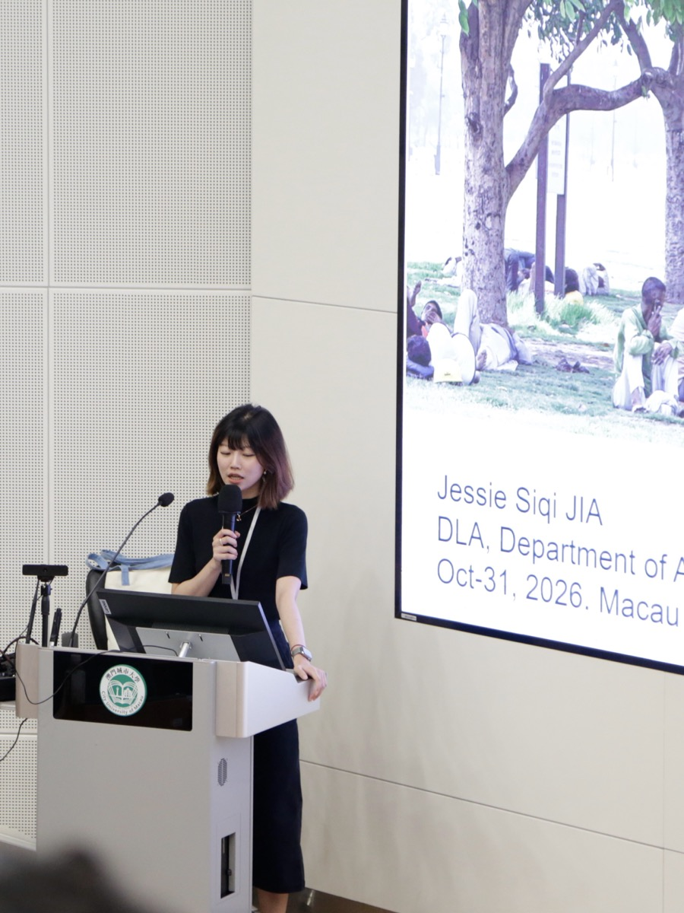
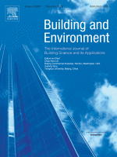
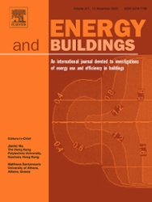

Invited Talk at City University of Macau
It is a pleasure to give an invited talk at City University of Macau, sharing our recent research on applying GeoAI to support climate-resilient urban planning and design.
Hello, I am Siqi JIA, Jessie. I am a Research Assistant Professor in the Department of Architecture, Faculty of Architecture.
My research focuses on GeoAI, urban climate, heat exposure and climate adaptation. I integrate remote sensing, weather observations, three-dimensional urban morphology and population data to understand urban environments and inform equitable adaptation strategies.
I received my PhD in Civil and Environmental Engineering from The Hong Kong Polytechnic University in 2023, where I subsequently worked as a Postdoctoral Fellow before joining HKU in August 2024. I hold an MSc in Geography and Resource Management from The Chinese University of Hong Kong.
Google Scholar ↗HKU Department Profile ↗Email

It is a pleasure to give an invited talk at City University of Macau, sharing our recent research on applying GeoAI to support climate-resilient urban planning and design.

Our paper, “When do three-dimensional tree metrics improve pedestrian thermal-environment prediction? Evidence from Shanghai and Singapore,” has been accepted for publication in Building and Environment.
In collaboration with the National University of Singapore and Tongji University, this study examines which tree indicators improve pedestrian thermal-environment predictions and under what conditions, using observations in Shanghai and Singapore. Happy reading!
Read the article on ScienceDirect ↗

Our paper, “Data-driven assessment of north–south differences in urban thermal stress perception in Chinese Cities,” has been accepted for publication in Energy and Buildings.
In collaboration with Shanghai Jiao Tong University, this study examines how subjective thermal perceptions vary across urban settings and population groups in Tianjin and Hong Kong, providing evidence for locally tailored heat adaptation strategies. Happy reading!
Read the article on ScienceDirect ↗
Department of Architecture
Faculty of Architecture
The University of Hong Kong
For research collaboration and academic enquiries:
siqijia@hku.hk; jessie.jia@connect.polyu.hk (cc both)